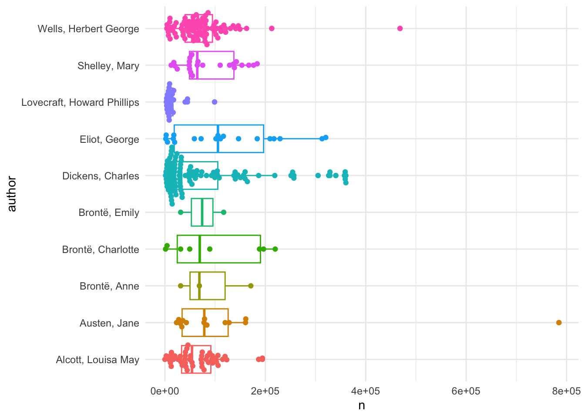
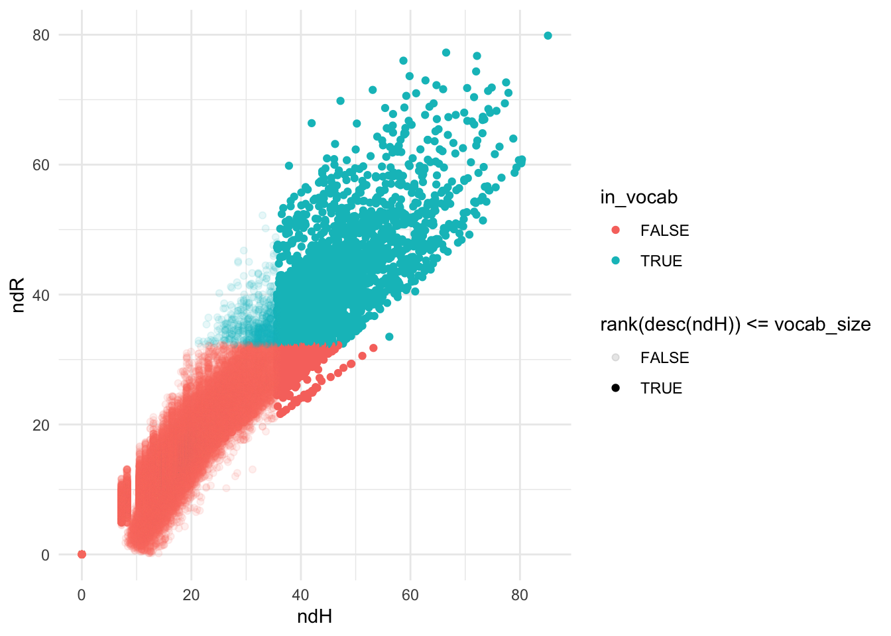
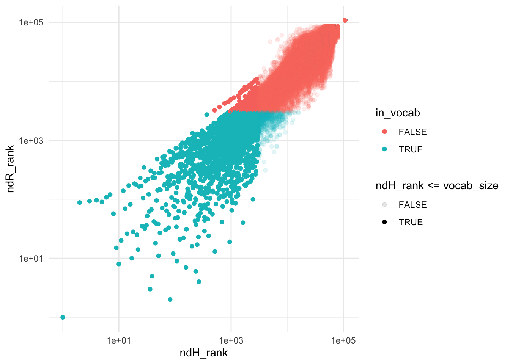
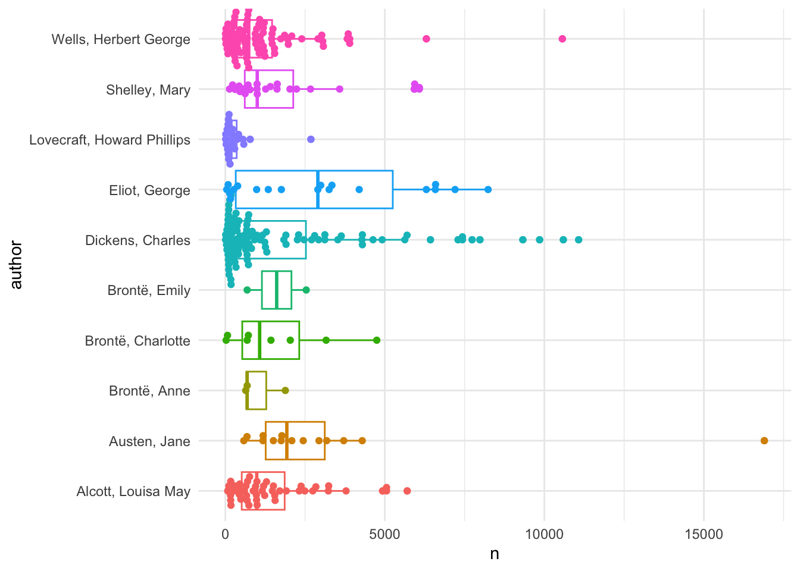
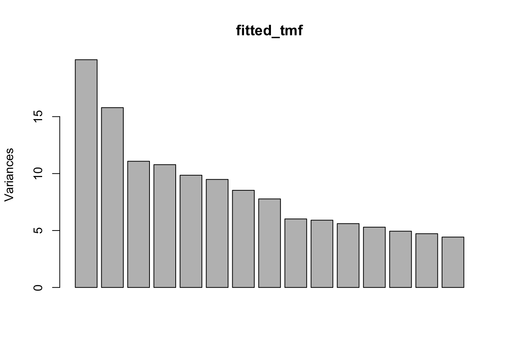
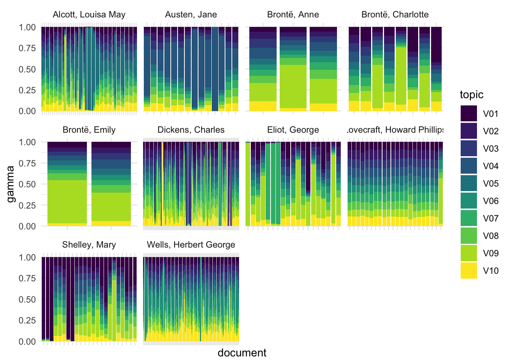
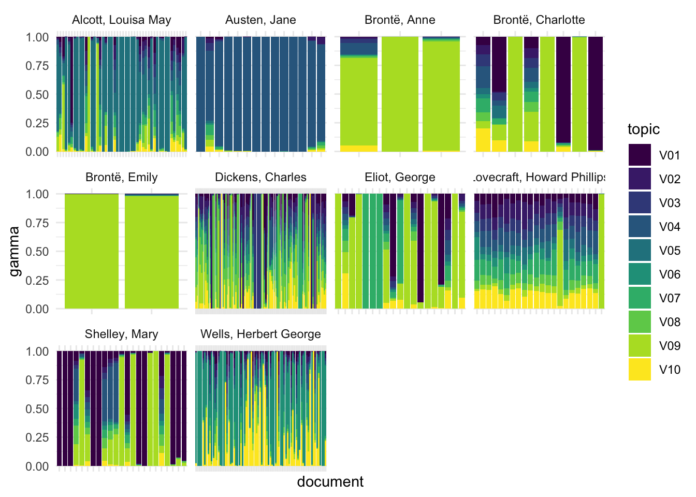
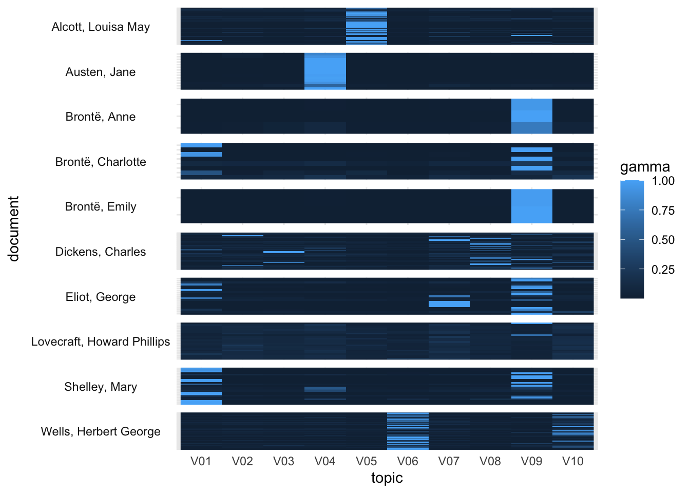
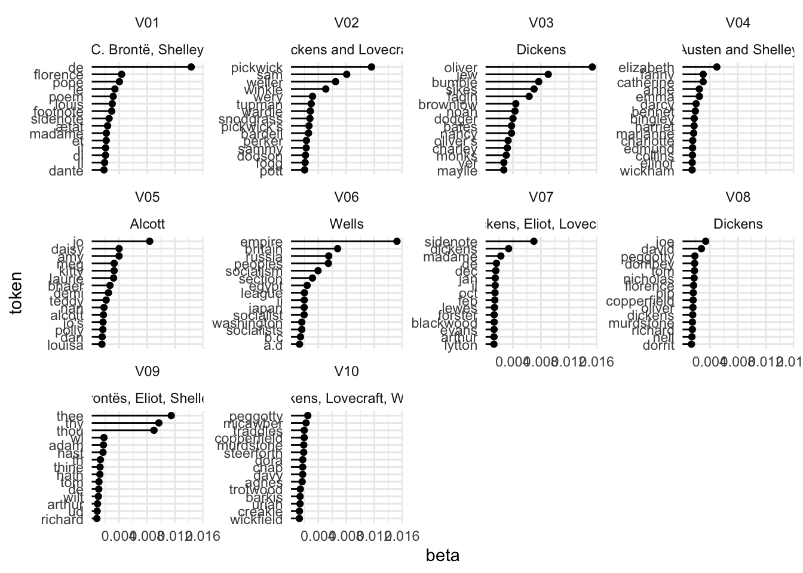

Fast topic modeling with real books
Dan Hicks hicks.daniel.j@gmail.com
Source:vignettes/realbooks.Rmd
realbooks.RmdIn this vignette, we analyze a corpus of works from the long nineteenth century, attempting to recover the author of each one.
The corpus is provided in the tmfast.realbooks
data package. To install this data package use
remotes:
remotes::install_github('dhicks/tmfast.realbooks')or specify the drat repository:
install.packages('tmfast.realbooks', repos = 'https://dhicks.github.io/drat/')Setup
## Warning: package 'tibble' was built under R version 4.5.2## Warning: package 'readr' was built under R version 4.5.2## Warning: package 'purrr' was built under R version 4.5.2## Warning: package 'dplyr' was built under R version 4.5.2## ── Attaching core tidyverse packages ──────────────────────── tidyverse 2.0.0 ──
## ✔ dplyr 1.2.1 ✔ readr 2.2.0
## ✔ forcats 1.0.0 ✔ stringr 1.6.0
## ✔ ggplot2 3.5.2 ✔ tibble 3.3.1
## ✔ lubridate 1.9.4 ✔ tidyr 1.3.1
## ✔ purrr 1.2.2
## ── Conflicts ────────────────────────────────────────── tidyverse_conflicts() ──
## ✖ dplyr::filter() masks stats::filter()
## ✖ dplyr::lag() masks stats::lag()
## ℹ Use the conflicted package (<http://conflicted.r-lib.org/>) to force all conflicts to become errors##
## Attaching package: 'tmfast'
##
## The following object is masked from 'package:stats':
##
## loadings
library(tmfast.realbooks)Corpus assembly
We analyze works by 10 authors of the long nineteenth century: Jane
Austen, Anne, Charlotte, and Emily Brontë, Louisa May Alcott, George
Eliot, Mary Shelley, Charles Dickens, HG Wells, and HP Lovecraft. We
load the corpus and use tidytext::unnest_tokens() to
convert it into a long-format document-term matrix.
data(corpus_raw)
## ~17 sec
tic()
dataf = corpus_raw |>
unnest_tokens(term, text, token = 'words') |>
count(gutenberg_id, author, title, term)
toc()## 18.201 sec elapsed
meta_df = distinct(dataf, author, title)
dataf## # A tibble: 2,084,777 × 5
## gutenberg_id author title term n
## <int> <chr> <chr> <chr> <int>
## 1 35 Wells, Herbert George The Time Machine _can_ 1
## 2 35 Wells, Herbert George The Time Machine _cancan_ 1
## 3 35 Wells, Herbert George The Time Machine _down_ 1
## 4 35 Wells, Herbert George The Time Machine _four_ 1
## 5 35 Wells, Herbert George The Time Machine _him_ 1
## 6 35 Wells, Herbert George The Time Machine _how_ 1
## 7 35 Wells, Herbert George The Time Machine _i_ 1
## 8 35 Wells, Herbert George The Time Machine _instantaneous_ 1
## 9 35 Wells, Herbert George The Time Machine _minus_ 1
## 10 35 Wells, Herbert George The Time Machine _nil_ 1
## # ℹ 2,084,767 more rowsTo reproduce the corpus download from scratch (requires network
access and several minutes), see data-raw/download.R in the
tmfast.realbooks
package.
The number of works by each author varies widely, as does the total token count.
## # A tibble: 10 × 2
## author n
## <chr> <int>
## 1 Alcott, Louisa May 47
## 2 Austen, Jane 14
## 3 Brontë, Anne 3
## 4 Brontë, Charlotte 8
## 5 Brontë, Emily 2
## 6 Dickens, Charles 92
## 7 Eliot, George 19
## 8 Lovecraft, Howard Phillips 22
## 9 Shelley, Mary 23
## 10 Wells, Herbert George 76
with(dataf, n_distinct(author, title))## [1] 306
dataf |>
group_by(author, title) |>
summarize(n = sum(n)) |>
summarize(
min = min(n),
median = median(n),
max = max(n),
total = sum(n)
) |>
arrange(desc(total))## `summarise()` has regrouped the output.
## ℹ Summaries were computed grouped by author and title.
## ℹ Output is grouped by author.
## ℹ Use `summarise(.groups = "drop_last")` to silence this message.
## ℹ Use `summarise(.by = c(author, title))` for per-operation grouping
## (`?dplyr::dplyr_by`) instead.## # A tibble: 10 × 5
## author min median max total
## <chr> <int> <dbl> <int> <int>
## 1 Dickens, Charles 1364 32623 360501 7580054
## 2 Wells, Herbert George 3958 65792. 468321 5643718
## 3 Alcott, Louisa May 8 53990 194255 2993425
## 4 Eliot, George 1871 105728 320413 2249613
## 5 Shelley, Mary 12514 64487 183856 1974410
## 6 Austen, Jane 23192 78455 784790 1789234
## 7 Brontë, Charlotte 1416 69468. 219783 780849
## 8 Lovecraft, Howard Phillips 2808 10172. 99008 364219
## 9 Brontë, Anne 31410 68716 171177 271303
## 10 Brontë, Emily 31410 74246 117082 148492
dataf |>
group_by(author, title) |>
summarize(n = sum(n)) |>
ggplot(aes(author, n, color = author)) +
geom_boxplot() +
geom_beeswarm() +
scale_color_discrete(guide = 'none') +
coord_flip()## `summarise()` has regrouped the output.
## ℹ Summaries were computed grouped by author and title.
## ℹ Output is grouped by author.
## ℹ Use `summarise(.groups = "drop_last")` to silence this message.
## ℹ Use `summarise(.by = c(author, title))` for per-operation grouping
## (`?dplyr::dplyr_by`) instead.
Vocabulary selection
In line with a common rule of thumb in topic modeling, we aim for a vocabulary of about 10 times as many terms as documents in the corpus.
vocab_size = n_distinct(dataf$author, dataf$title) * 10
vocab_size## [1] 3060tmfast provides two information-theoretic methods for
vocabulary selection. Both are based on the idea of a two-player
guessing game. I pick one of the documents from the corpus, then one of
the terms from the document. I tell you the term, and you have to guess
which document I picked. More informative terms have greater information
gain (calculated as the Kullback-Leibler divergence) relative to a
“baseline” distribution based purely on the process used to pick the
document. The difference between the two methods is in the
document-picking process. The ndH method assumes the
document was picked uniformly at random from the corpus, so that no
document is more likely to be picked than any other. The
ndR method assumes document probability is proportional to
the document length, so that shorter documents are less likely to be
picked. This method implies that terms that are distinctive of shorter
documents have high information gain, since they indicate “surprising”
short documents.
On either method, the most informative terms are often typographical
or OCR errors, since these only occur in a single document. To balance
this, we multiply the information gain
(
for the uniform process,
for the length-weighted process) by the log frequency of the term across
the entire corpus
().
So ndH is shorthand for
while ndR is shorthand for
.
tic()
H_df = ndH(dataf, title, term, n)
R_df = ndR(dataf, title, term, n) |>
mutate(in_vocab = rank(desc(ndR)) <= vocab_size)
toc()## 10.943 sec elapsed
H_df## # A tibble: 129,567 × 5
## term H dH n ndH
## <chr> <dbl> <dbl> <int> <dbl>
## 1 kipps 0.149 8.10 1457 85.1
## 2 gwendolen 0.239 8.01 1048 80.4
## 3 lydgate 0.0235 8.22 867 80.3
## 4 boffin 0.392 7.86 1187 80.2
## 5 deronda 0.404 7.84 1155 79.8
## 6 pecksniff 0.646 7.60 1387 79.3
## 7 dombey 0.929 7.32 1779 79.0
## 8 tito 0.0971 8.15 812 78.8
## 9 christie 1.04 7.20 1797 77.9
## 10 benham 0.0315 8.22 689 77.5
## # ℹ 129,557 more rows
R_df## # A tibble: 129,567 × 5
## term n dR ndR in_vocab
## <chr> <int> <dbl> <dbl> <lgl>
## 1 kipps 1457 7.60 79.9 TRUE
## 2 _for_ 398 8.94 77.2 TRUE
## 3 hoopdriver 479 8.62 76.7 TRUE
## 4 _scro 139 10.7 76.0 TRUE
## 5 lewisham 579 8.10 74.3 TRUE
## 6 scrooge 1420 7.03 73.6 TRUE
## 7 _added 195 9.59 73.0 TRUE
## 8 benham 689 7.71 72.7 TRUE
## 9 melville 243 9.11 72.2 TRUE
## 10 bert 555 7.88 71.9 TRUE
## # ℹ 129,557 more rowsThe resulting term ranking of the two methods tend to be similar, but
ndR is preferable in the current case because of the
additional weight it gives to distinctive terms from shorter
documents.
inner_join(H_df, R_df, by = 'term') |>
ggplot(aes(ndH, ndR, color = in_vocab)) +
geom_point(aes(alpha = rank(desc(ndH)) <= vocab_size))## Warning: Using alpha for a discrete variable is not advised.
inner_join(H_df, R_df, by = 'term') |>
mutate(ndH_rank = rank(desc(ndH)), ndR_rank = rank(desc(ndR))) |>
ggplot(aes(ndH_rank, ndR_rank, color = in_vocab)) +
geom_point(aes(alpha = ndH_rank <= vocab_size)) +
scale_x_log10() +
scale_y_log10()## Warning: Using alpha for a discrete variable is not advised.
## [1] "kipps" "_for_" "hoopdriver" "_scro" "lewisham"
## [6] "scrooge" "_added" "benham" "melville" "bert"
## [11] "bealby" "vendale" "scr" "veronica" "christie"
## [16] "_erased" "snitchey" "sylvia" "boldheart" "britling"
## [21] "castruccio" "obenreizer" "before_" "lillian" "alberta"
## [26] "maggie" "n't" "marjorie" "craggs" "bab"
## [31] "kemp" "christina" "redwood" "cavor" "brumley"
## [36] "harman" "chatteris" "bounderby" "heathcliff" "iranon"
## [41] "ammi" "preemby" "willett" "line_" "goodchild"
## [46] "tackleton" "trottle" "gladys" "helwyze" "tetterby"
dataf |>
filter(term %in% vocab) |>
group_by(author, title) |>
summarize(n = sum(n)) |>
ggplot(aes(author, n, color = author)) +
geom_boxplot() +
geom_beeswarm() +
scale_color_discrete(guide = 'none') +
coord_flip()## `summarise()` has regrouped the output.
## ℹ Summaries were computed grouped by author and title.
## ℹ Output is grouped by author.
## ℹ Use `summarise(.groups = "drop_last")` to silence this message.
## ℹ Use `summarise(.by = c(author, title))` for per-operation grouping
## (`?dplyr::dplyr_by`) instead.
Fit topic models
dtm = dataf |>
filter(term %in% vocab) |>
mutate(n = log1p(n))
n_authors = n_distinct(dataf$author)
tic()
fitted_tmf = tmfast(
dtm,
n = c(5, n_authors, n_authors + 5),
row = title,
column = term,
value = n
)
toc()## 0.234 sec elapsed
screeplot(fitted_tmf, npcs = n_authors + 5)
Topic exploration
Without renormalization, most of the works are spread across a few topics, and the topics don’t clearly correspond to authors.
tidy(fitted_tmf, n_authors, 'gamma') |>
left_join(meta_df, by = c('document' = 'title')) |>
ggplot(aes(document, gamma, fill = topic)) +
geom_col() +
facet_wrap(vars(author), scales = 'free_x') +
scale_x_discrete(guide = 'none') +
scale_fill_viridis_d()## Warning in left_join(tidy(fitted_tmf, n_authors, "gamma"), meta_df, by = c(document = "title")): Detected an unexpected many-to-many relationship between `x` and `y`.
## ℹ Row 601 of `x` matches multiple rows in `y`.
## ℹ Row 1 of `y` matches multiple rows in `x`.
## ℹ If a many-to-many relationship is expected, set `relationship =
## "many-to-many"` to silence this warning.
To renormalize, we need to choose a theoretical Dirichlet distribution.
alpha = peak_alpha(n_authors, 1, peak = .8, scale = 10)
target_entropy = expected_entropy(alpha)
target_entropy## [1] 0.997604
exponent = tidy(fitted_tmf, n_authors, 'gamma') |>
target_power(document, gamma, target_entropy)
exponent## [1] 4.186508
tidy(fitted_tmf, n_authors, 'gamma', exponent = exponent) |>
left_join(meta_df, by = c('document' = 'title')) |>
ggplot(aes(document, gamma, fill = topic)) +
geom_col() +
facet_wrap(vars(author), scales = 'free_x') +
scale_x_discrete(guide = 'none') +
scale_fill_viridis_d()## Warning in left_join(tidy(fitted_tmf, n_authors, "gamma", exponent = exponent), : Detected an unexpected many-to-many relationship between `x` and `y`.
## ℹ Row 601 of `x` matches multiple rows in `y`.
## ℹ Row 1 of `y` matches multiple rows in `x`.
## ℹ If a many-to-many relationship is expected, set `relationship =
## "many-to-many"` to silence this warning.
tidy(fitted_tmf, n_authors, 'gamma', exponent = exponent) |>
left_join(meta_df, by = c('document' = 'title')) |>
ggplot(aes(topic, document, fill = gamma)) +
geom_raster() +
facet_grid(rows = vars(author), scales = 'free_y', switch = 'y') +
scale_y_discrete(guide = 'none') +
theme(strip.text.y.left = element_text(angle = 0))## Warning in left_join(tidy(fitted_tmf, n_authors, "gamma", exponent = exponent), : Detected an unexpected many-to-many relationship between `x` and `y`.
## ℹ Row 601 of `x` matches multiple rows in `y`.
## ℹ Row 1 of `y` matches multiple rows in `x`.
## ℹ If a many-to-many relationship is expected, set `relationship =
## "many-to-many"` to silence this warning.
After renormalization, there are distinctive topics for Alcott (5), Austen (4), and Wells (6 and 10). The Brontë sisters appear in topic 9, along with Eliot and Shelley; Charlotte and Shelley share topic 1. Dickens, Eliot, and Lovecraft share topic 7. Dickens, Lovecraft, and Wells are all spread across multiple topics.
To aid interpretation, we create a crosswalk dataframe connecting topics to authors.
topic_author = tribble(
~topic , ~authors ,
'V01' , 'C. Brontë, Shelley' ,
'V02' , 'Dickens and Lovecraft' ,
'V03' , 'Dickens' ,
'V04' , 'Austen and Shelley' ,
'V05' , 'Alcott' ,
'V06' , 'Wells' ,
'V07' , 'Dickens, Eliot, Lovecraft' ,
'V08' , 'Dickens' ,
'V09' , 'Brontës, Eliot, Shelley' ,
'V10' , 'Dickens, Lovecraft, Wells'
)To explore these topics further, we turn to the word-topic distribution. We renormalize these distributions, as with the topic-doc distributions.
target_entropy_term = expected_entropy(5, k = vocab_size)
target_entropy_term## [1] 11.43988
exponent_term = tidy(fitted_tmf, n_authors, 'beta') |>
target_power(topic, beta, target_entropy_term)
exponent_term## [1] 4.399872
beta_df = tidy(fitted_tmf, n_authors, 'beta', exponent = exponent_term)After renormalization we construct a Silge plot, showing the top 10
terms for each topic. tidytext::reorder_within() and
tidytext::scale_x_reordered() are useful for constructing
this plot.
top_terms = beta_df |>
group_by(topic) |>
arrange(topic, desc(beta)) |>
top_n(15, beta) |>
left_join(topic_author, by = 'topic')
top_terms## # A tibble: 150 × 4
## # Groups: topic [10]
## token topic beta authors
## <chr> <chr> <dbl> <chr>
## 1 de V01 0.0143 C. Brontë, Shelley
## 2 florence V01 0.00437 C. Brontë, Shelley
## 3 pope V01 0.00405 C. Brontë, Shelley
## 4 le V01 0.00340 C. Brontë, Shelley
## 5 poem V01 0.00316 C. Brontë, Shelley
## 6 louis V01 0.00302 C. Brontë, Shelley
## 7 footnote V01 0.00295 C. Brontë, Shelley
## 8 sidenote V01 0.00257 C. Brontë, Shelley
## 9 ætat V01 0.00236 C. Brontë, Shelley
## 10 madame V01 0.00218 C. Brontë, Shelley
## # ℹ 140 more rows
top_terms |>
mutate(token = reorder_within(token, by = beta, within = topic)) |>
ggplot(aes(token, beta)) +
geom_point() +
geom_segment(aes(xend = token), yend = 0) +
facet_wrap(vars(topic, authors), scales = 'free_y') +
coord_flip() +
scale_x_reordered()
Most topics focus on character names, with three of the four Dickens topics corresponding to The Pickwick Papers, Oliver Twist, and David Copperfield. Wells’ topics appear to distinguish non-fiction essays (topic 6) from fiction (10). Topic 1 groups together Charlotte Brontë and Shelley based on the use of French.